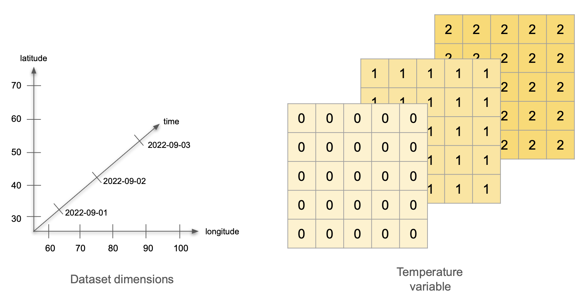

import os
import pandas as pd
import numpy as np
import xarray as xr # This is the package we'll explore18 xarray
xarray is an open source project and Python package that augments NumPy arrays by adding labeled dimensions, coordinates and attributes. xarray is based on the NetCDF data model, making it the appropriate tool to open, process, and create datasets in NetCDF format.
In this lesson we will learn about the two core objects in xarray the xarray.DataArray and the xarray.Dataset. We will also learn how to subset data from them.
18.1 Variables, dimensions, and attributes
Variables, dimensions, and attributes refer to the same components of NetCDF files we reviewed in the previous section. The following is a concrete example of variables, dimensions, and attributes that will guide the rest of the section.
Imagine the following scenario:
We have a network of 25 weather stations. They are located in a square grid: starting at 30°0′N 60°0′E, there is a station every 10° North and every 10° East. Each station measures the air temperature at a set time for three days, starting on September 1st, 2022. On the first day, all stations record a temperature of 0°C. On the second day, all temperatures are 1°C, and on the third day, all temperatures are 2°C. What are the variables, dimensions and attributes for this data?
Answer
Variables: There is a single variable being measured: temperature. The variable values can be represented as a 5x5x3 array, with constant values for each day.
Dimensions: This dataset has three dimensions: time, latitude, and longitude. Time indicates when the measurement happened, we can encode it as the dates 2022-09-01, 2022-09-02, and 2022-09-03. The pairs of latitude and longitude values indicate the positions of the weather stations. Latitude has values 30, 40, 50, 60, and 70, measured in degrees North. Longitude has values 60, 70, 80, 90, and 100, measured in degrees East.

Attributes: Let’s divide these into attributes for the variable, the dimensions, and the whole dataset:
- Variable attributes:
- Temperature attributes:
- standard_name: air_temperature
- units: degree_C
- Temperature attributes:
- Dimension attributes:
- Time attributes:
- description: date of measurement
- Latitude attributes:
- standard_name: grid_latitude
- units: degrees_N
- Longitude attributes:
- satandard_name: grid_longitude
- units: degree_E
- Time attributes:
- Dataset attributes:
- title: Temperature Measurements at Weather Stations
- summary: an example of NetCDF data format
Now imagine we calculate the average temperature over time at each weather station, and we wish to incorporate this data into the same dataset. How will adding the average temperature data change the dataset’s variables, attributes, and dimensions?
Answer
Variables: Now we are measuring two variables: temperature and average temperature. The temperature data stays the same. We can represent the average temperature as a single 5x5 array with value 1 at each cell.
Dimensions: This dataset still has three dimensions: time, latitude, and longitude. The temperature variable uses all three dimensions, and the average temperature variable only uses two (latitude and longitude). This is ok! The dataset’s dimensions are the union of the dimensions of all the variables in the dataset. Variables in the same dataset may have all, some, or no dimensions in common.

Attributes: To begin with, we need to keep all the previous attributes. Notice that the dataset’s title is general enough that we don’t need to update it. The only update we need to do is add the attributes for our new average temperature variable:
- Average temperature attributes:
- standard_name: average_air_temperature
- description: average temperature over three days
18.2 xarray.DataArray
The xarray.DataArray is the primary data structure of the xarray package. It is an n-dimensional array with labeled dimensions. We can think of it as representing a single variable in the NetCDF data format: it holds the variable’s values, dimensions, and attributes.
Apart from variables, dimensions, and attributes, xarray introduces one more piece of information to keep track of a dataset’s content: in xarray each dimension has at least one set of coordinates. A dimension’s coordinates indicate the dimension’s values. We can think of the coordinate’s values as the tick labels along a dimension.
For example, in our previous exercise about temperature measured in weather stations, latitude is a dimension, and the latitude’s coordinates are 30, 40, 50, 60, and 70 because those are the latitude values at which we are collecting temperature data. In that same exercise, time is a dimension, and its coordinates are 2022-09-1, 2022-09-02, and 2022-09-03.

Here you can read more about the xarray terminology.
18.2.1 Create an xarray.DataArray
Let’s suppose we want to make an xarray.DataArray that includes the information from our previous example about measuring temperature across three days. First, we import all the necessary libraries.
Variable Values
The underlying data in the xarray.DataArray is a numpy.array that holds the variable values. So we can start by making a numpy.array with our mock temperature data:
# values of a single variable at each point of the coords
temp_data = np.array([np.zeros((5,5)),
np.ones((5,5)),
np.ones((5,5))*2]).astype(int)
temp_dataarray([[[0, 0, 0, 0, 0],
[0, 0, 0, 0, 0],
[0, 0, 0, 0, 0],
[0, 0, 0, 0, 0],
[0, 0, 0, 0, 0]],
[[1, 1, 1, 1, 1],
[1, 1, 1, 1, 1],
[1, 1, 1, 1, 1],
[1, 1, 1, 1, 1],
[1, 1, 1, 1, 1]],
[[2, 2, 2, 2, 2],
[2, 2, 2, 2, 2],
[2, 2, 2, 2, 2],
[2, 2, 2, 2, 2],
[2, 2, 2, 2, 2]]])We could think this is “all” we need to represent our data. But if we stopped at this point, we would need to
remember that the numbers in this array represent the temperature in degrees Celsius (doesn’t seem too bad),
remember that the first dimension of the array represents time, the second latitude and the third longitude (maybe ok), and
keep track of the range of values that time, latitude, and longitude take (not so good).
Keeping track of all this information separately could quickly get messy and could make it challenging to share our data and analyses with others. This is what the netCDF data model and xarray aim to simplify. We can get data and its descriptors together in an xarray.DataArray by adding the dimensions over which the variable is being measured and including attributes that appropriately describe dimensions and variables.
Dimensions and Coordinates
To specify the dimensions of our upcoming xarray.DataArray, we must examine how we’ve constructed the numpy.array holding the temperature data. The diagram below shows how the dimensions of temp_data are ordered: the first dimension is time, the second is latitude, and the third is longitude.
Remember that indexing in 2-dimensional numpy.arrays starts at the top-left corner of the array, and it is done by rows first and columns second (like matrices). This is why latitude is the second dimension and longitude the third. From the diagram, we can also see that the coordinates (values of each dimension) are as follows:
- time coordinates are 2022-09-01, 2022-09-02, 2022-09-03
- latitude coordinates are 70, 60, 50, 40, 30 (notice decreasing order)
- longitude coordinates are 60, 70, 80, 90, 100 (notice increasing order)
We add the dimensions as a tuple of strings and coordinates as a dictionary:
# names of the dimensions in the required order
dims = ('time', 'lat', 'lon')
# create coordinates to use for indexing along each dimension
coords = {'time' : pd.date_range("2022-09-01", "2022-09-03"),
'lat' : np.arange(70, 20, -10),
'lon' : np.arange(60, 110, 10)} Attributes
Next, we add the attributes (metadata) for our temperature data as a dictionary:
# attributes (metadata) of the data array
attrs = { 'title' : 'temperature across weather stations',
'standard_name' : 'air_temperature',
'units' : 'degree_c'}Putting It All Together
Finally, we put all these pieces together (data, dimensions, coordinates, and attributes) to create an xarray.DataArray:
# initialize xarray.DataArray
temp = xr.DataArray(data = temp_data,
dims = dims,
coords = coords,
attrs = attrs)
temp<xarray.DataArray (time: 3, lat: 5, lon: 5)>
array([[[0, 0, 0, 0, 0],
[0, 0, 0, 0, 0],
[0, 0, 0, 0, 0],
[0, 0, 0, 0, 0],
[0, 0, 0, 0, 0]],
[[1, 1, 1, 1, 1],
[1, 1, 1, 1, 1],
[1, 1, 1, 1, 1],
[1, 1, 1, 1, 1],
[1, 1, 1, 1, 1]],
[[2, 2, 2, 2, 2],
[2, 2, 2, 2, 2],
[2, 2, 2, 2, 2],
[2, 2, 2, 2, 2],
[2, 2, 2, 2, 2]]])
Coordinates:
* time (time) datetime64[ns] 2022-09-01 2022-09-02 2022-09-03
* lat (lat) int64 70 60 50 40 30
* lon (lon) int64 60 70 80 90 100
Attributes:
title: temperature across weather stations
standard_name: air_temperature
units: degree_cWe can also update the variable’s attributes after creating the object. Notice that each of the coordinates is also an xarray.DataArray, so we can add attributes to them.
# update attributes
temp.attrs['description'] = 'simple example of an xarray.DataArray'
# add attributes to coordinates
temp.time.attrs = {'description':'date of measurement'}
temp.lat.attrs['standard_name']= 'grid_latitude'
temp.lat.attrs['units'] = 'degree_N'
temp.lon.attrs['standard_name']= 'grid_longitude'
temp.lon.attrs['units'] = 'degree_E'
temp<xarray.DataArray (time: 3, lat: 5, lon: 5)>
array([[[0, 0, 0, 0, 0],
[0, 0, 0, 0, 0],
[0, 0, 0, 0, 0],
[0, 0, 0, 0, 0],
[0, 0, 0, 0, 0]],
[[1, 1, 1, 1, 1],
[1, 1, 1, 1, 1],
[1, 1, 1, 1, 1],
[1, 1, 1, 1, 1],
[1, 1, 1, 1, 1]],
[[2, 2, 2, 2, 2],
[2, 2, 2, 2, 2],
[2, 2, 2, 2, 2],
[2, 2, 2, 2, 2],
[2, 2, 2, 2, 2]]])
Coordinates:
* time (time) datetime64[ns] 2022-09-01 2022-09-02 2022-09-03
* lat (lat) int64 70 60 50 40 30
* lon (lon) int64 60 70 80 90 100
Attributes:
title: temperature across weather stations
standard_name: air_temperature
units: degree_c
description: simple example of an xarray.DataArrayAt this point, since we have a single variable, the dataset attributes and the variable attributes are the same.
18.2.2 Subsetting
To select data from an xarray.DataArray we need to specify the subsets we want along each dimension. We can specify the data we need from each dimension either by relying on the dimension’s positions (dimension lookup by position) or by calling each dimension by its name (dimension lookup by name). Let’s see some examples.
Example
Suppose we want to know what was the temperature recorded by the weather station located at 40°0′N 80°0′E on September 1st, 2022.
Dimension lookup by position
When we want to rely on the position of the dimensions in the xarray.DataArray, we need to remember that time is the first dimension, latitude is the second, and longitude the third.
Then, we can then access the values along each dimension in two ways:
- by integer: the exact same as a
np.array. Use the locator brackets[]and “simply” remember that ***:
# access dimensions by position, then use integers for indexing
temp[0,3,2]<xarray.DataArray ()>
array(0)
Coordinates:
time datetime64[ns] 2022-09-01
lat int64 40
lon int64 80
Attributes:
title: temperature across weather stations
standard_name: air_temperature
units: degree_c
description: simple example of an xarray.DataArray- by label: same as
pandas. We use the.loc[]locator to lookup a specific coordinate at each position (which represents a dimension):
# access dimensions by position, then use labels for indexing
temp.loc['2022-09-01', 40, 80]<xarray.DataArray ()>
array(0)
Coordinates:
time datetime64[ns] 2022-09-01
lat int64 40
lon int64 80
Attributes:
title: temperature across weather stations
standard_name: air_temperature
units: degree_c
description: simple example of an xarray.DataArrayFor datasets with dozens of dimensions, it can be confusing to remember which dimensions go where.
Dimension lookup by name
We can also use the dimension names to subset data, without the need to remember which dimensions goes where In this case, there are still two ways of selecting data along a dimension:
- by integer: we specify the integer location of the data we want along each dimension:
# acess dimensions by name, then use integers for indexing
temp.isel(time=0, lon=2, lat=3)<xarray.DataArray ()>
array(0)
Coordinates:
time datetime64[ns] 2022-09-01
lat int64 40
lon int64 80
Attributes:
title: temperature across weather stations
standard_name: air_temperature
units: degree_c
description: simple example of an xarray.DataArray- by label: we use the coordinate values we want to get!
# access dimensions by name, then use labels for indexing
temp.sel(time='2022-09-01', lat=40, lon=80)<xarray.DataArray ()>
array(0)
Coordinates:
time datetime64[ns] 2022-09-01
lat int64 40
lon int64 80
Attributes:
title: temperature across weather stations
standard_name: air_temperature
units: degree_c
description: simple example of an xarray.DataArrayNotice that the result of this indexing is a 1x1 xarray.DataArray. This is because operations on an xarray.DataArray always return another xarray.DataArray. In particular, operations returning scalar values will also produce xarray objects, so we need to cast them as numbers manually. See xarray.DataArray.item.
| Dimension lookup | Indexing along dimension | What to use | Example |
|---|---|---|---|
| By position | by integer | [] |
temp[0,3,2] |
| By position | by label | .loc[] |
temp.loc['2022-09-01', 40, 80] |
| By name | by integer | .isel() |
temp.isel(time=0, lon=2, lat=3) |
| By name | by label | .sel() |
temp.sel(time='2022-09-01', lat=40, lon=80) |
More about xarray indexing.
18.2.3 Reduction
xarray has implemented several methods to reduce an xarray.DataArray along any number of dimensions. One of the advantages of xarray.DataArray is that, if we choose to, it can carry over attributes when doing calculations. For example, we can calculate the average temperature at each weather station over time and obtain a new xarray.DataArray.
avg_temp = temp.mean(dim = 'time')
# to keep attributes add keep_attrs = True
avg_temp.attrs = {'title':'average temperature over three days'}
avg_temp<xarray.DataArray (lat: 5, lon: 5)>
array([[1., 1., 1., 1., 1.],
[1., 1., 1., 1., 1.],
[1., 1., 1., 1., 1.],
[1., 1., 1., 1., 1.],
[1., 1., 1., 1., 1.]])
Coordinates:
* lat (lat) int64 70 60 50 40 30
* lon (lon) int64 60 70 80 90 100
Attributes:
title: average temperature over three daysMore about xarray computations.
18.3 xarray.DataSet
An xarray.DataSet resembles an in-memory representation of a NetCDF file and consists of multiple variables (each being an xarray.DataArray), with dimensions, coordinates, and attributes, forming a self-describing dataset. Attributes can be specific to each variable, each dimension, or they can describe the whole dataset. The variables in an xarray.DataSet can have the same dimensions, share some dimensions, or have no dimensions in common. Let’s see an example of this.
18.3.1 Create an xarray.DataSet
Following our previous example, we can create an xarray.DataSet by combining the temperature data with the average temperature data. We also add some attributes that now describe the whole dataset, not only each variable.
# make dictionaries with variables and attributes
data_vars = {'avg_temp': avg_temp,
'temp': temp}
attrs = {'title':'temperature data at weather stations: daily and and average',
'description':'simple example of an xarray.Dataset'}
# create xarray.Dataset
temp_dataset = xr.Dataset( data_vars = data_vars,
attrs = attrs)Take some time to click through the data viewer and read through the variables and metadata in the dataset. Notice the following:
temp_datasetis a dataset with three dimensions (time, latitude, and longitude),tempis a variable that uses all three dimensions in the dataset, andaveg_tempis a variable that only uses two dimensions (latitude and longitude).
temp_dataset<xarray.Dataset>
Dimensions: (lat: 5, lon: 5, time: 3)
Coordinates:
* lat (lat) int64 70 60 50 40 30
* lon (lon) int64 60 70 80 90 100
* time (time) datetime64[ns] 2022-09-01 2022-09-02 2022-09-03
Data variables:
avg_temp (lat, lon) float64 1.0 1.0 1.0 1.0 1.0 1.0 ... 1.0 1.0 1.0 1.0 1.0
temp (time, lat, lon) int64 0 0 0 0 0 0 0 0 0 0 ... 2 2 2 2 2 2 2 2 2 2
Attributes:
title: temperature data at weather stations: daily and and average
description: simple example of an xarray.Dataset18.3.2 Save and Reopen
Finally, we want to save our dataset as a NetCDF file. To do this, specify the file path and use the .nc extension for the file name. Then save the dataset using the to_netcdf method with your file path. Opening NetCDF is similarly straightforward using xarray.open_dataset().
# save file - don't forget the .nc extension!
temp_dataset.to_netcdf('temp_dataset.nc')
# open to check:
check = xr.open_dataset('temp_dataset.nc'
)
check<xarray.Dataset>
Dimensions: (lat: 5, lon: 5, time: 3)
Coordinates:
* lat (lat) int32 70 60 50 40 30
* lon (lon) int32 60 70 80 90 100
* time (time) datetime64[ns] 2022-09-01 2022-09-02 2022-09-03
Data variables:
avg_temp (lat, lon) float64 ...
temp (time, lat, lon) int32 ...
Attributes:
title: temperature data at weather stations: daily and and average
description: simple example of an xarray.Dataset18.4 Acknowledgements
This lesson is adapted from the NetCDF and xarray lesson I prepared for the Arctic Data Center’s course on scalable computing:
S. Jeanette Clark, Matthew B. Jones, Samantha Csik, Carmen Galaz García, Bryce Mecum, Natasha Haycock-Chavez, Daphne Virlar-Knight, Juliet Cohen, Anna Liljedahl. 2023. Scalable and Computationally Reproducible Approaches to Arctic Research. Arctic Data Center. doi:10.18739/A2QF8JM2V